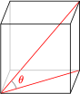
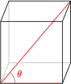
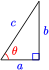
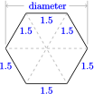
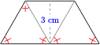
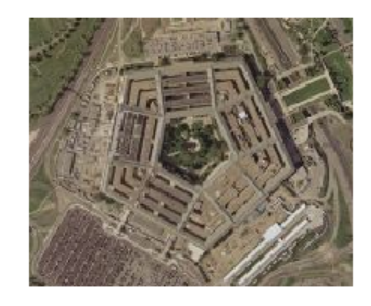
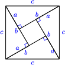

SubsectionChapter 2 Review Problems
¶
For Problems 1–6, explain why the description of \(\triangle ABC\) is impossible.
1
\(A \lt B \lt C\text{,}\) and \(B = 93\degree\)
2
\(A \lt B \lt C\text{,}\) and \(C = 58\degree\)
3
\(a \lt b \lt c,\) and \(C = 58\degree\)
4
\(a \lt b \lt c,\) and \(B =93\degree\)
5
\(A=80\degree,~B=50\degree,~ b=4,\) and \(c=6 \)
6
\(a = 23,~ b = 28,~ c=55,\) and \(A =30\degree\)
For Problems 7 and 8, sketch the triangle.
7
The three angles of a triangle are \(20\degree, 50\degree, \text{and}~ 110\degree,\) and the three sides are 15 cm, 6.7 cm, and 18.4 cm. Sketch and label the triangle.
8
Sketch and label an isosceles triangle with sides 5 in and 12 in, and one angle \(78\degree\text{.}\)
For Problems 9–12, find the unknown side of the right triangle.
13
A triangle has sides of length 33, 56, and 65. Is it a right triangle?
14
A triangle has sides of length 22.5, 27.2, and 35.3. Is it a right triangle?
15
Find the angle between the diagonal of a cube and the diagonal of one of the sides. (See the figure at right.)

16
Find the angle between the diagonal of a cube and one edge. (See the figure at right.)

17
In the triangle shown, \(\cos \theta = \dfrac{3}{5}\text{.}\) Can we conclude that \(a = 3\) and \(c = 5\text{?}\) Give two other possibilities for the values of \(a\) and \(c\text{.}\)

18
In the triangle shown, \(\tan \theta = \dfrac{5}{3}\text{.}\) Can we conclude that \(a = 5\) and \(b = 3\text{?}\) Give two other possibilities for the values of \(a\) and \(b\)
For Problems 19–22,
- Find the unknown side.
- Find the sine, cosine, and tangent of \(\theta\text{.}\) Round your answers to four decimal places.
For Problems 23–28,find the unknown side of the triangle. Round your answer to hundredths.
For Problems 29–32,solve the triangle. Give exact values.
33
Find the diameter of a hex nut if one of the sides is 1.5 cm.

34
Find the long edge of the trapezoidal block of height 3 centimeters.

35
If a stop sign is 80 centimeters across, what is the radius of a circle that circumscribes the stop sign?
36
The Pentagon, which houses the U.S. Department of Defense, is in the shape of a regular pentagon. Each of the five outer walls is 921.6 feet long. What is the shortest distance from one of the outer walls to the opposite vertex of the pentagon?

37
A building casts a 12 meter shadow. At that moment, the sun is \(53\degree\) above the horizon. How tall is the building?
38
A ramp is rising at an angle \(25\degree\) from horizontal. What is the distance (along the ramp) from the base of the ramp to the point on the ramp that is 1 meter higher than the base of the ramp?
39
A baseball diamond is a square with sides 90 feet long. The corners are called (in clockwise order) first base, second base, third base, and home plate. The sides are called baselines. A runner is on the baseline between first and second base, 20 feet from second base. How far is the runner from home plate? What is the angle between the baseline from home plate to first base and the line from home plate to the runner?
40
A runner is on the baseline between second and third base, 10 feet from second base. How far is the runner from home plate? What is the angle between the baseline from home plate to third base and the line from home plate to the runner?
41
Let \(l\) be the line that passes through the origin and the point \((4,7)\text{.}\) Let \(\theta\) be the angle that \(l\) makes with the positive \(x\)-axis.
- Find the value of \(\theta\text{.}\) Hint: Draw the triangle with vertices at the origin, \((4,7)\text{,}\) and \((4,0)\text{,}\) labeling the angle at the origin \(\theta\text{.}\) What is \(\tan \theta\) ?)
- Let \(l ^{\prime}\) be any line parallel to \(l\text{.}\) Find the measure of the acute angle that \(l ^{\prime}\) makes with the positive \(x\)-axis.
- What is the slope of the line \(l\) ? How is it related to \(\tan \theta\) ?
42
Let \(l\) be the line that passes through the origin and the point \((a,b)\text{,}\) where \(a\) and \(b\) are positive numbers. Let \(\theta\) be the angle that \(l\) makes with the positive \(x\)-axis.
- Find the value of \(\theta\text{.}\) Hint: Draw the triangle with vertices at the origin, \((a,b)\text{,}\) and \((a,0)\text{,}\) labeling the angle at the origin \(\theta\text{.}\) What is \(\tan \theta\) ?)
- What is the slope of the line \(l\) ? How is it related to \(\tan \theta\text{?}\)
- Let \(l ^{\prime}\) be any line parallel to \(l\text{.}\) How is the slope of the line \(l ^{\prime}\) related to \(\tan \theta\) ?
43
The figure illustrates the Pythagorean theorem.
- What is the area of the whole square?
- What is the side of the smaller interior square? What is its area?
- What is the area of one of the right triangles?
- Add the areas of the four triangles and the smaller square to obtain another expression for the area of the whole square.

44
The figure illustrates a proof of the Pythagorean theorem given by Euclid. The proof involves showing that the area of the square on the hypotenuse \(\overline{AB}\) is the sum of the areas of the squares on legs \(\overline{BC}\) and \(\overline{AC}\text{.}\)
- We first draw a line segment from point \(C\) perpendicular to the hypotenuse \(\overline{AB}\) to meet the far side of the square on the hypotenuse. This segment meets \(\overline{AB}\) at \(G\) and the opposite side of the square at \(D\text{.}\) How does the area of \(\triangle ACE\) compare with the area of \(\triangle ABF\) ? (Hint: Show that the triangles are congruent.)
- How does the area of \(\triangle ABF\) compare with the area of the square on \(\overline{AC}\) ? (Hint: Consider \(\overline{AF}\) to be the base of the triangle. What is the height?)
- How does the area of \(\triangle ACE\) compare with the area of the rectangle \(AGDE\) ? (Hint: Consider \(\overline{AE}\) to be the base of the triangle. What is the height?)
- Explain why the area of the square on \(\overline{AC}\) equals the area of the rectangle \(AGDE\text{.}\)
- An argument similar to parts (a)–(d) will show that the area of the square on \(\overline{BC}\) equals the area of the rectangle \(BGDH\text{.}\) Explain how writing the area of the square on \(\overline{AB}\) as the sum of the areas of two rectangles gives the Pythagorean theorem.